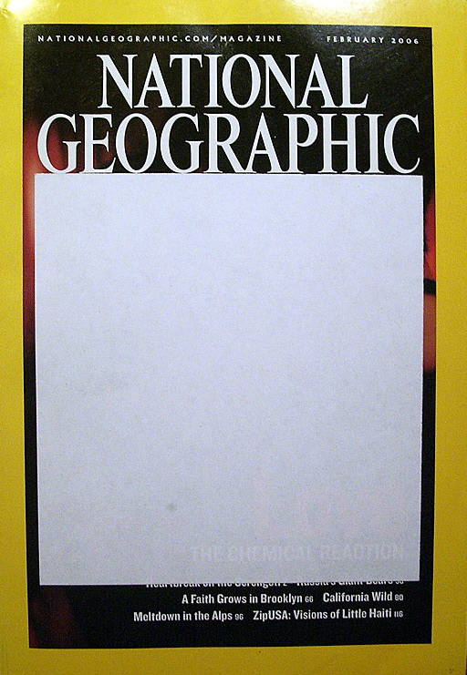

einleitende Infos über das jeweilige Stück Enstehungszeit etc.
Gebrüder Grimm
Ein armer Mann hatte so viel Kinder, daß er schon alle Welt zu Gevatter gebeten hatte, und als er noch eins bekam, so war niemand mehr übrig, den er bitten konnte. Er wußte nicht was er anfangen sollte, legte sich in seiner Betrübnis nieder und schlief ein. Da träumte ihm er sollte vor das Thor gehen und den ersten, der ihm begegnete, zu Gevatter bitten. Als er aufgewacht war, beschloß er dem Traume zu folgen, gieng hinaus vor das Thor und den ersten, der ihm begegnete, bat er zu Gevatter. Der Fremde schenkte ihm ein Gläschen mit Wasser und sagte 'das ist ein wunderbares Wasser, damit kannst du die Kranken gesund machen, du mußt nur sehen wo der Tod steht. Steht er beim Kopf, so gib dem Kranken von dem Wasser, und er wird gesund werden, steht er aber bei den Füßen, so ist alle Mühe vergebens, er muß sterben.' Der Mann konnte von nun an immer sagen ob ein Kranker zu retten war oder nicht, ward berühmt durch seine Kunst und verdiente viel Geld. Einmal ward er zu dem Kind des Königs gerufen, und als er eintrat, sah er den Tod bei dem Kopfe stehen, und heilte es mit dem Wasser, und so war es auch bei dem zweitenmal, aber das drittemal, stand der Tod bei den Füßen, da mußte das Kind sterben. Der Mann wollte doch einmal seinen Gevatter besuchen und ihm erzählen wie es mit dem Wasser gegangen war. Als er aber ins Haus kam, war eine so wunderliche Wirthschaft darin. Auf der ersten Treppe zankten sich Schippe und Besen, und schmissen gewaltig aufeinander los. Er fragte sie 'wo wohnt der Herr Gevatter?' Der Besen antwortete 'eine Treppe höher.' Als er auf die zweite Treppe kam, sah er eine Menge todter Finger liegen. Er fragte 'wo wohnt der Herr Gevatter?' Einer aus den Fingern antwortete 'eine Treppe höher.' Auf der dritten Treppe lag ein Haufen todter Köpfe, die wiesen ihn wieder eine Treppe höher. Auf der vierten Treppe sah er Fische über dem Feuer stehen, die britzelten in der Pfanne, und backten sich selber. Sie sprachen auch 'eine Treppe höher.' Und als er die fünfte hinauf gestiegen war, so kam er vor eine Stube und guckte durch das Schlüsselloch, da sah er den Gevatter, der ein paar lange lange Hörner hatte. Als er die Thüre aufmachte und hinein gieng, legte sich der Gevatter geschwind aufs Bett und deckte sich zu. Da sprach der Mann 'Herr Gevatter, was ist für eine wunderliche Wirthschaft in eurem Hause? als ich auf eure erste Treppe kam, so zankten sich Schippe und Besen mit einander und schlugen gewaltig auf einander los.' ' Wie seid ihr so einfältig,' sagte der Gevatter, 'das war der Knecht und die Magd, die sprachen mit einander.' 'Aber auf der zweiten Treppe sah ich todte Finger liegen.' 'Ei, wie seid ihr albern! das waren Skorzenerwurzel.' 'Auf der dritten Treppe lag ein Haufen Todtenköpfe.' Dummer Mann, das waren Krautköpft.' 'Auf der vierten sah ich Fische in der Pfanne, die britzelten, und backten sich selber.' Wie er das gesagt hatte, kamen die Fische und trugen sich selber auf. 'Und als ich die fünfte Treppe heraufgekommen war, guckte ich durch das Schlüsselloch einer Tür, und da sah ich Euch, Gevatter, und ihr hattet lange lange Hörner.' 'Ei, das ist nicht wahr.' Dem Mann ward angst, und er lief fort, und wer weiß was ihm der Herr Gevatter sonst angetan hätte.
Autor2
Der Begriff „Zensur“ ist abgeleitet vom lateinischen Wort censura[2], das eine strenge Prüfung bzw. Beurteilung und zugleich das Amt eines Sittenrichters (Censors) im römischen Staat bezeichnete. Mit dem Wort Zins ist der Begriff Zensur (mit der auch die Bewertung von Schülern bezeichnet wird) ebenfalls verwandt, und zwar über die gemeinsame lateinische Wurzel censere, die eigentlich „schätzen“ bedeutet. Zum Verb censere wurde das Substantiv censura gebildet, das „Prüfung, Begutachtung, Kritik“ bedeutet und im 15. oder 16. Jahrhundert ins Deutsche übernommen wurde.
Wilhelm Busch
Mancher gibt sich viele Müh
Mit dem lieben Federvieh:
Einesteils der Eier wegen,
Welche diese Vögel legen,
Zweitens, weil man dann und wann
EinenBraten essen kann;
Drittens aber nimmt man auch
Ihre Federn zum Gebrauch
In die Kissen und die Pfühle,
Denn man liegt nicht gerne kühle.
Seht, da ist die Witwe Bolte,
Die das auch nicht gerne wollte.
Ihrer Hühner waren drei
Und ein stolzer Hahn dabei.
Max und Moritz dachten nun:
Was ist hier jetzt wohl zu tun?
Ganz geschwinde, eins, zwei, drei,
Schneiden sie sich Brot entzwei,
In vier Teile, jedes Stück
Wie ein kleiner Finger dick.
Diese binden sie an Fäden,
Übers Kreuz, ein Stück an jeden,
Und verlegen sie genau
In den Hof der guten Frau.
Kaum hat dies der Hahn gesehen,
fängt er auch schon an zu krähen:
Kikeriki, kikikerikih!!
Tak, tak, tak, da kommen sie!
Hahn und Hühner schlucken munter
Jedes ein Stück Brot hinunter;
Aber als sie sich besinnen,
Konnte keines recht von hinnen.
In die Kreuz und in die Quer
Reißen sie sich hin und her,
Flattern auf und in die Höh,
Ach herrje, herrjemine!
Ach, sie bleiben an dem langen,
Dürren Ast des Baumes hangen.
Und ihr Hals wird lang und länger,
Ihr Gesang wird bang und bänger,
Jedes legt noch schnell ein Ei,
Und dann kommt der Tod herbei.
Witwe Bolte in der Kammer
Hört im Bette diesen Jammer;
Ahnungsvoll tritt sie heraus:
Ach, was war das für ein Graus!
“Fließet aus dem Aug, ihr Tränen!
All mein Hoffen, all mein Sehnen,
Meines Lebens schönster Traum
Hängt an diesem Apfelbaum!”
Witwe Bolte schneidet die Hühner ab
Tiefbetrübt und sorgenschwer
Kriegt sie jetzt das Messer her,
Nimmt die Toten von den Strängen,
Daß sie so nicht länger hängen,
Und mit stummem Trauerblick
Kehrt sie in ihr Haus zurück.
Dieses war der erste Streich,
Doch der zweite folgt sogleich.
Infotext über das Seminar